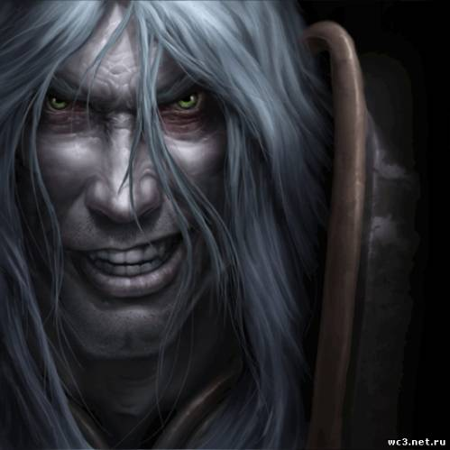

Артас Менетил
Артас Менетил – кронпринц Лордерона и рыцарь Cеребряной Длани. Был сыном короля Теренаса Менетила II и наследником трона. Утер Светоносный обучал его бравому делу паладина, а к волшебницеДжайне Праудмур он испытывал романтические чувства. Но несмотря на многообещающее начало жизни, после объединения с Королем-личем, Артас стал одним из самых ужасных созданий, когда-либо встречавшихся на просторах Азерота.Биография
Восхождение Короля-Лича
Принц Артас Менетил родился за четыре года до Первой войны в семье короля Теренаса Менетила II. Молодой принц рос в те времена, когда земли всего Азерота были пронизаны войной, Альянс находился в смятении, а темные облака всё ещё вырисовывались на горизонте. Будучи ещё ребенком, Артас подружился с Варианом Ринном.
В эти времена Артас встретил младшую дочь Даэлина Праудмура - волшебницу Джайну. На протяжении нескольких лет они росли бок о бок друг с другом, и всё это закончилось романтическими отношениями. Они очень сильно любили друг друга. Но когда Юный Принц стал паладином, он стал задаваться вопросом: готовы ли они быть вместе? И он решил навремя расстаться с Джайной, чтобы она могла сосредоточиться на своём магическом обучении, а он — на своих обязательствах перед Лордероном. Но вскоре после этого они решили возобновить свои отношения, но это случилось в самом начале нашествия Плети — события, которое навсегда изменило их жизни.
Чума
Кел'Тузад уже заразил все зерно, хранившееся в Андорале и отправил его в ближайшие деревни. Перед смертью от руки Артаса, Кел'Тузад обмолвился о Мал'Ганисе, который вел за собой Плеть. Джайна и Артас отправились на север, чтобы сразиться с ним в Стратхольме.
Очищение Стратхольма
Как только молодой принц начал уничтожать жителей Стратхольма, перед ним предстал сам Мал'Ганис, пытавшийся забрать души горожан. Артас пытался уничтожить души до того, как они попадут в лапы Мал'Ганиса. В конце концов Артас потребовал финальной битвы с повелителем ужаса. Мал'Ганис улизнул, пообещав встретиться с Артасом в Нордсколе.
Ледяная Скорбь
Пройдя через древние ворота, Артас, Мурадин и небольшой отряд воинов оказались совсем недалеко от легендарного рунного меча. Артас вскоре столкнулся с Стражем, который попытался не пустить молодого принца к легендарному мечу. Страж пал, а Артас и Мурадин получили заслуженную награду — Ледяную Скорбь. Прочитав начертания, Мурадин сообщил, что меч проклят и умолял Артаса: "Ох, оставь все как есть, Артас! Забудь об этом и веди своих людей в родные земли!" . Артас был непреклонен, он призвал духов пещеры освободить меч из его ледяной тюрьмы, уверяя, что "отдаст всё или же заплатит любую цену, если только духи позволят защитить его народ" . Когда меч освободился от ледяных оков, Мурадин получил удар отскочившим ледяным осколком. Артас взял Ледяную Скорбь и вернулся в лагерь, оставив Мурадина умирать.
Возвращение в Лордерон
Спустя несколько месяцев Артас вернулся в Лордерон, который ликовал при возвращении своего чемпиона, победителя нежити. Артас пал на колено перед троном своего отца, короля Теренаса. Однако затем он поднялся, взял Ледяную Скорбь и убил им своего ошеломлённого отца.
Старый бездушный хрычТриумф Короля-Лича
С громким боевым криком Артас направил Ледяную Скорбь против ледяной тюрьмы Короля-лича и с оглушающим криком Ледяной Трон взорвался, и осколки кристалла рассыпались по земле. Артас сделал несколько шагов вперед, подобрал шипастый шлем и надел этот невообразимо могущественный артефакт на свою голову.
Смерть Артаса
После поражения Короля-лича, Сильвана хочет посмотреть на Ледяной Трон. Она находит расколотую броню Артаса, но его тела, как и остатков Ледяной Скорби, уже нет. Сильвана совершает самоубийство и её душа попадает в обитель тьмы, где она встречает страдающую душу Артаса.
Личность
В книге Артас. Восхождение Короля-лича принц был любим всем королевством, абсолютно любой был готов пойти за своим принцем (именно по этому артас и смог собрать большое войско в Нордскол, и именно поэтому после возвращения принца никто не стал подозревать его к обращении к тьме).
Отношения с друзьями и близкими
Любопытно, что Артас является эмоциональным человеком. Его учителя - Утер и Мурадин, стали его хорошими друзьями. Он намеревался остаться друзьями с Джайной даже после столь неловкого окончания их отношений. Он никогда не позволял своему происхождению быть помехой в общении со своим народом, общаясь с простыми людьми как с равными. Злая ирония судьбы, но, возможно, именно это и стало главной причиной его падения: он не мог спокойно смотреть, как Плеть уничтожает его подданых. Месть за тех, кого он считал близкими, стала его главной целью. Вдобавок к этому, он, возможно, считал, что был предан Утером, отказавшимся выполнять приказ, и Джайной, покинувшей его вслед за этим. Потеря поддержки лучших друзей, вероятно, настолько его ожесточила, что он без колебаний отправился делать то, что считал единственно верным - очищать Стратхольм.